JT's Image Blog Choose a post below: All Landscape Urban Food News People 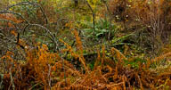 Lake District Woodland Autumn Colours 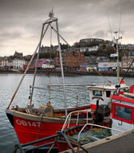 Oban, Scotland Fisher Folk and Ferries 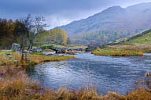 Little Langdale An autumnal walk Prague, Czech Republic Impressions 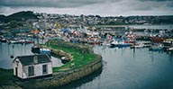 Newlyn, Cornwall Fish & Art Venice Chaos, Beauty & Decay 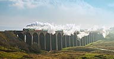 Tornado Steam Train Ribblehead 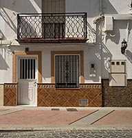 Nerja, Spain Architecture 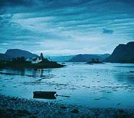 Plockton, Scotland A Highland Jewel 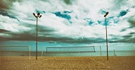 Nerja, Spain Iconic Beaches New York Circa 1999 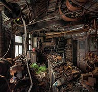 Decay A Study of Decay West Yorkshire Mill. Jones Jewellery Some of my work... Photographed in the 70's. John Todd's Roma 'Indisputable evidence that the trip was made' It all started here An early encounter with a camera. 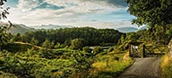 Thank you Beatrix An iconic and beautiful Lake District location. 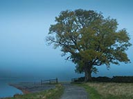 Misty Buttermere Atmospheric conditions North Western Lakes. 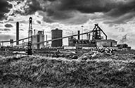 Redcar The industrial landscape explored. Arnside The changing moods Blencathra, Lake District Wainwright Fell No. 14 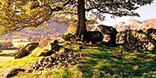 Langdale Boulders Ancient history and a beautiful location. 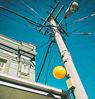 Wellington Portrait Looking up [#1] Dean Clough Highly successful Halifax Mill conversion. New Zealand There and Back Again. 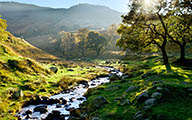 Saddleworth Seasonal changes over a year. 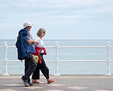 Bridlington 20 Minutes 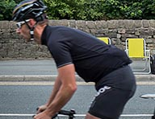 Le Tour de France In Yorkshire 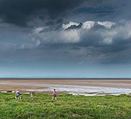 Knott End A road to nowhereon the Fylde Coast 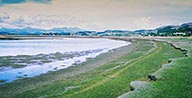 The Duddon Estuary South West Lakes Rohan Head Unspoilt Beach with views 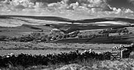 Crimsworth Dean Worth the climb... Classic Lasagne The tall one... Still Life Classic images... Yorkshire Dales ...In "Gods own County" Auckland Portrait Looking up [#2]